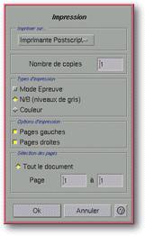

<!-- Documentation Xclamation (c)1994-2000 AXENE contact axene@axene.org>
<html>

<head>
<title>Impression</title>
</head>

<body BGCOLOR="#FFFFFF" BACKGROUND="Images/back.gif" TEXT="#000000">

<p ALIGN="right">  </p>

<p><br>
<br>
La boîte de dialogue <i>&quot;Impression&quot;</i> permet de choisir les paramètres
d'impression avant de lancer celle-ci. L'impression porte sur le document actif et
s'effectue en PostScript® uniquement. <br>
<br>
</p>

<hr>

<p align="center"><br>
<br>
<i><small>Photo d'écran&nbsp;: Boîte d'impression </small></i></p>

<p><br>
</p>

<hr>

<p><br>
</p>

<h3>Partie supérieure de la boîte de dialogue&nbsp;:</h3>

<ul>
  <li><a NAME="printer_list">la liste déroulante &quot;<i>Imprimer sur...</i>&quot; permet de
    <b>sélectionner l'imprimante</b> qui sera utilisée pour imprimer le document parmi
    celles définies dans les </a><a HREF="ConfigPrinter.html">fichiers de configuration</a>.
    La liste contient une entrée particulière intitulée <i>&quot;Fichier&quot;</i>, qui, si
    elle est choisie, permet d'<b>imprimer dans un fichier</b> dont le nom sera choisi
    ultérieurement dans le sélecteur de fichier '<a HREF="Box_File_Selectors.html#fs_print_in_file">Impression dans le fichier...</a>' à la
    fermeture de cette boîte. <br>
    &nbsp;</li>
  <li><a NAME="nb_copy_textfield">le champ texte &quot;<i>Nombre de copies</i>&quot; permet de
    <b>spécifier le nombre d'exemplaires</b> du document ou partie de document qui à
    imprimer. </a><br>
    &nbsp;</li>
  <li><a NAME="draft_mode_toggle">le bouton poussoir &quot;<i>Mode Epreuve</i>&quot; permet d'<b>imprimer
    les pages sans les images</b> qu'elles contiennent. Le mode épreuve permet d'imprimer
    rapidement le brouillon d'un document pour vérifier la mise en page par exemple. C'est
    surtout l'impression des images qui est lente sur les imprimantes. L'image sera remplacée
    par un cadre vide. </a><br>
    &nbsp;</li>
  <li><a NAME="nb_mode_radio">le bouton poussoir &quot;<i>N/B (niveaux de gris)</i>&quot;
    permet d'<b>imprimer en noir et blanc</b> ou plus précisément en niveaux de gris. Toutes
    les couleurs utilisées dans le document seront transformées en niveaux de gris avant
    d'être imprimées. Il est préférable de choisir ce mode lorsque l'on imprime sur une
    imprimante noir et blanc, car la taille des données d'impression est moins importante et
    le traitement plus rapide. Ce mode noir et blanc et le mode couleur sont antagonistes. </a><br>
    &nbsp;</li>
  <li><a NAME="color_mode_radio">le bouton poussoir &quot;<i>Couleur</i>&quot; permet d'<b>imprimer
    en couleur</b>. Il est préférable d'utiliser ce mode seulement si l'on veut imprimer en
    couleur sur une imprimante couleur. </a><br>
    &nbsp;</li>
  <li><a NAME="left_page_toggle">le bouton poussoir &quot;<i>Pages gauches</i>&quot; autorise
    l'<b>impression des pages gauches</b>. Si ce bouton n'est pas actif et si le document est
    composé de pages recto-verso ou de double-page, les pages de gauches ne seront pas
    imprimées. </a><br>
    &nbsp;</li>
  <li><a NAME="right_page_toggle">le bouton poussoir &quot;<i>Pages droites</i>&quot; autorise
    l'<b>impression des pages droites</b>. Il est utile de désactiver ce bouton seulement si
    le document est composé de pages recto-verso ou de double-page et que l'on ne veut
    imprimer que les pages gauches. Si les deux boutons &quot;Pages gauches&quot; et
    &quot;Pages droites&quot; sont désactivés, rien ne sera imprimé. </a><br>
    &nbsp;</li>
  <li><a NAME="all_document_toggle">le bouton poussoir &quot;<i>Tout le document</i>&quot;
    permet d'<b>imprimer l'intégralité du document</b>. Activer ce bouton affiche dans les
    deux champs textes <i>&quot;Page&quot;</i> les numéros de la première page et de la
    dernière. </a><br>
    &nbsp;</li>
  <li><a NAME="page_from_to_textfields">les deux champs textes &quot;<i>Page</i>&quot; et
    &quot;<i>à</i>&quot; permettent de <b>choisir un intervalle de numéro de page à
    imprimer</b>. La valeur du premier champ doit être comprise entre 1 et la valeur du
    second champ. La valeur du second champ doit être comprise entre la valeur du premier et
    le numéro de la dernière page du document. Le fait de modifier l'une des deux valeurs
    peut changer l'état du bouton &quot;<i>Tout le document</i>&quot;. </a></li>
</ul>

<p><br>
</p>

<h3>Partie inférieure de la boîte de dialogue&nbsp;:</h3>

<ul>
  <li><a NAME="button_ok">&quot;Ok&quot; accepte les paramètres d'impression, ferme la boîte
    et <b>lance l'impression</b>. Si l'imprimante sélectionnée est <i>&quot;Fichier&quot;</i>,
    le sélecteur de fichier '</a><a HREF="Box_File_Selectors.html#fs_print_in_file">Impression
    dans le fichier...</a>' s'ouvre pour choisir le nom du fichier cible et l'impression
    s'effectuera ensuite. <br>
    &nbsp;</li>
  <li><a NAME="button_cancel">&quot;Annuler&quot; <b>ferme la boîte</b> sans lancer aucune
    impression. </a></li>
</ul>

<p><br>
</p>

<hr>

<p ALIGN="right"></p>
</body>
</html>
